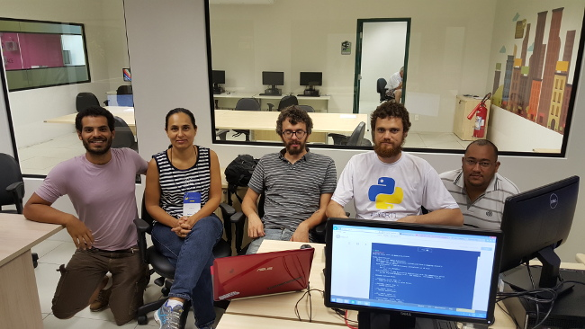

Uma das coisas que sempre me chamou a atenção quando busco informações sobre linguagens open source foi a disponibilidade e atenção do outro lado da internet. Por meio de listas de e-mail, Stackoverflow, e fóruns, é possível conseguir ajuda para virtualmente tudo o que você precisa, do básico ao avançado.
Comecei a aprender Python pra valer há pouco tempo, e por acaso me fiquei sabendo que iria acontecer a 11ª Conferência Brasileira da Comunidade Python, organizada pela Associação Python Brasil. O evento ocorreu em São José dos Campos, São Paulo, de 7 a 11 de Novembro.
Me animei com a oportunidade de conhecer o rosto da comunidade Python do Brasil. Logo chequei preço de passagem e opções de hotel, e vi que seria viável participar. Não participei dos tutoriais nos dias 7 e 8, cheguei no dia 8 à noite.
Posso dizer que valeu a pena. A conferência contou com palestrantes de relevância, inclusive internacional, e trilhas que atenderam às minhas necessidades : #PyData, #carreira, #web, #iniciantes. Foram muitas palestras interessantes, que me aguçaram a curiosidade para pesquisar até tarde sobre os assuntos tratados.
Um dos pontos altos da conferência foram as lightning talks, mini palestras com duração máxima de 5 minutos. São momentos mais informais, em que há a liberdade para se apresentar sobre qualquer tema, como divulgar um hacker space, mostrar um projeto próprio, ou até mandar uma importante mensagem sobre depressão. Mas ai de quem ultrapassasse 5 minutos - o barulho das palmas abafava a fala que tentava se estender.
Além de tudo isso, deixei para o fim o principal, como enfatizado em vários momentos durante a conferência: as pessoas. A possibilidade de conhecer novas pessoas, diferentes realidades e exercitar o networking foi especial. Entre outras pessoas, pude conhecer Luciano Ramalho, autor do livro Python Fluente, e, de quebra, trazer para casa seu o livro autografado. Também fiquei sabendo da existência de um grupo de desenvolvedores Python em Brasília, o Grupy-DF, de repente apareço no próximo encontro aqui em Brasília. Apareceu lá também o pessoal do Calango Hacker Clube, um espaço hacker onde pessoas podem trocar conhecimento e experiência.
Os sprints também foram ótimos momentos para conhecer novas pessoas e exercitar a colaboração, palavra que foi muito presente e me chamou atenção. Foram um momento em que os interessados (programadores, designers) se juntaram para conhecer e colaborar em projetos open source. Foi importante para mim o fato de encorajarem iniciantes e não programadores a participar, mesmo que contribuindo em traduções ou documentação, pois seria também um momento de aprendizado. E, principalmente, um momento em que poderíamos aprender como ocorre a construção do código e, quem sabe, dar um pontapé em uma colaboração a longo prazo.
Deixo uma foto de um dos grupos que participei durante os sprints, que contribuiu para o projeto Pytuga, de Fábio Mendes, criador do Pytuguês (Python em português), cujo objetivo é ensinar crianças e jovens a programar:

Da esquerda para a direita: eu, Griselda Jara, Fábio Mendes, Júlio Trevisan e uma pessoa que saiu pouco depois que eu cheguei, portanto não tive tempo de conhecê-lo…
A próxima Python Brasil será em Florianópolis. E aí, topa ir?